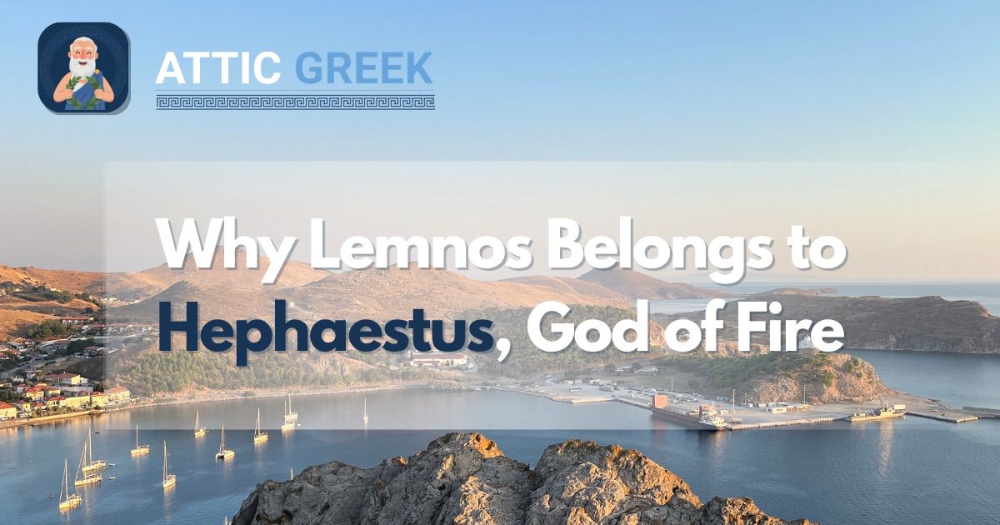

There is a small Greek island in the northern Aegean where, according to Homer, a god once fell from the sky.
His name was Hephaestus — god of fire and the forge. The story goes that one day on Olympus, he got caught in a quarrel between his parents, Zeus and Hera. Accounts vary (ancient sources love to argue about the details), but most agree that Zeus, in a fit of rage, grabbed him by the foot and hurled him off the mountain. Some versions say it was Hera who did it. Either way, Hephaestus was thrown.
All day he fell through the air. When the sun set, he crashed onto an island in the Aegean — Lemnos. He was barely alive when he hit the ground.
Standing on Lemnos today, knowing that Homer placed a god's fall here, that is not an easy thing to read past.
In the Iliad, Hephaestus recalls that moment himself:
ῥῖψε ποδὸς τεταγὼν ἀπὸ βηλοῦ θεσπεσίοιο,
πᾶν δ' ἦμαρ φερόμην, ἅμα δ' ἠελίῳ καταδύντι
κάππεσον ἐν Λήμνῳ, ὀλίγος δ' ἔτι θυμὸς ἐνῆεν·
ἔνθα με Σίντιες ἄνδρες ἄφαρ κομίσαντο πεσόντα.He caught me by the foot and hurled me from the divine threshold. All day long I was falling, and at sunset I dropped onto Lemnos, with little life left in me. There the Sintian people took me in at once, fallen as I was.
Homer, Iliad 1.591–594
Notice what the line does not do: it does not send Hephaestus to a vague, invented island. It names Λήμνῳ — Lemnos — the same place on the map today. For a poet working in the eighth century BC, singing to an audience that knew this island and its people, that specificity was not decoration. It was a claim about the real world.
Why is Lemnos sacred to Hephaestus?
Once Hephaestus lands, the Sintians — the island's early inhabitants, mentioned nowhere else in Homer with such care — nurse him back to strength. From that point on, Lemnos is his. Later Greek sources describe an eternal fire burning on the island in his honor, and Lemnos held one of the most important cult centers dedicated to Hephaestus anywhere in the Greek world, distinct from the more famous forge myths that place him under Mount Etna in Sicily. This was not a minor local tradition — Hephaestus's Lemnian identity was well known enough that Homer could reference it in a single line and expect his audience to understand exactly what it meant.
Is there real geological evidence behind the myth?
This is the detail that makes the story more than poetry. Ancient writers describe fire and smoke rising from a site on Lemnos known as Mosychlos, and the island sits within a genuinely volcanic region of the northern Aegean. Modern geological surveys confirm it: much of Lemnos is built from volcanic rock — lava flows, ash deposits, and igneous domes — laid down roughly 18 to 22 million years ago, during the early Miocene, when subduction beneath the Aegean drove a burst of volcanic activity across the region. That activity has long since gone quiet; Lemnos is not an active volcano today. But the rock itself is real, and so is the reddish, mineral-rich "Lemnian earth" the ancients mined near the old volcanic ground at Kotsinas, prized for centuries as a healing clay and exported across the Mediterranean.
There is a striking detail in the geology itself: the oldest volcanic rock formation on the island, the one the sediments beneath Lemnos's lava flows are named for, is called the Ifestia Unit — a modern geological term, but one built on the same root as Hephaestus. The scientists mapping the island's rock layers reached for the god's name too, thousands of years after Homer did, because there was no better word for what they had found. A god of fire, fallen from the sky, at home on an island that once genuinely burned from below — the myth and the geology were never really separate stories. One explained the other.
Where does the word "volcano" actually come from?
Here is the twist: despite everything above, the English word volcano is not Greek at all. It comes from Latin — specifically from Volcanus, the Roman god of fire, whom the Romans had already merged with Hephaestus. The Romans believed a small island off the coast of Sicily, part of the Aeolian Islands, was the chimney of Vulcan's forge, and they named it Vulcano. When Italian and other European languages needed a general word for a fire-breathing mountain, they borrowed that island's name rather than inventing a new one — so every "volcano" in English is, etymologically, a small nod to one specific Roman island named after a god the Romans had already borrowed from the Greeks.
Ancient Greek itself never had a single dedicated word for "volcano" as a category. The concept simply was not organized that way — ancient writers describing Etna or the fires of Lemnos used ordinary descriptive language (fire, smoke, a burning mountain) rather than a technical term, because no one had yet generalized these separate phenomena into one idea. That happened much later, once the Latin-derived word had already spread across Europe.
Modern Greek closes the loop in an unusual way. Rather than borrowing the Latin-derived European word back, Modern Greek built its own term directly from the god's name: ηφαίστειο (ifaístio) — a word formed straight from Ἥφαιστος, Hephaestus. So today, a Greek speaker calling Etna or Santorini an ifaístio is, in effect, saying "a Hephaestus" — reclaiming, in modern form, exactly the connection Homer was already drawing on Lemnos three thousand years earlier.
What other myth belongs to this island?
Lemnos carries a second, darker story: the myth of the Lemnian women, who — cursed by Aphrodite for neglecting her worship, in most versions of the tale — killed the men of the island. When the Argonauts, sailing toward Colchis for the Golden Fleece, put in at Lemnos not long after, they found an island of women alone. Apollonius of Rhodes tells the episode at length in his Argonautica, one of the strangest and most memorable stops on Jason's entire voyage. It is a very different kind of story from Hephaestus's — no forge, no fire, no rescue — but it belongs to the same island, and it is one more sign of how much myth this small place was made to carry.
What survives on Lemnos today?
Walk through Myrina, the island's capital, and you are not just looking at a modern Greek town. Beneath the hill crowned by the town's castle lie the remains of prehistoric settlement, layers of habitation reaching back long before the Byzantine and Genoese stonework visible above ground today — a reminder that people were living on this island, in this same spot, for thousands of years before Homer ever put Hephaestus here. The volcanic ground that likely gave rise to the myth in the first place is long since quiet. What has not changed is the wind: the meltemi blows steadily across Lemnos through the summer, keeping August here noticeably cooler than the stillness of the Aegean further south — a small, ordinary fact about the place, and also, in its own way, a reason people have wanted to live on this island for as long as they have.
Read the myths in the language they were first told in
Attic Greek teaches Ancient Greek from the alphabet up — 210 structured lessons, quizzes, flashcards, and annotated readings from Homer and the great classical authors, with Socrates himself as your guide.
Start with 5 free lessons →Five lessons and the opening of the Odyssey, free forever. Then $4.99/month or $34.99/year.